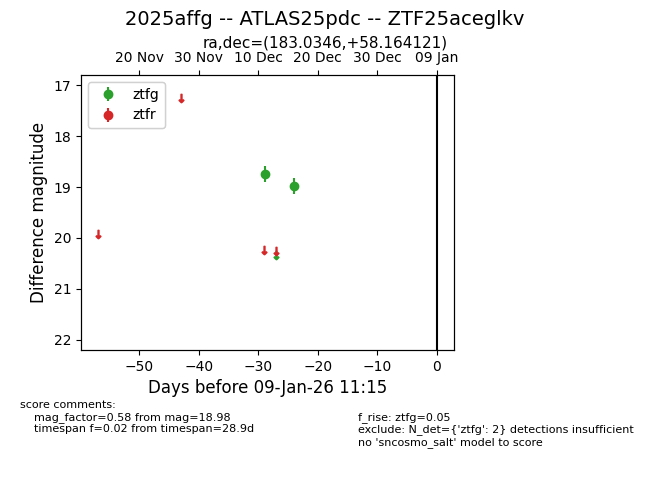
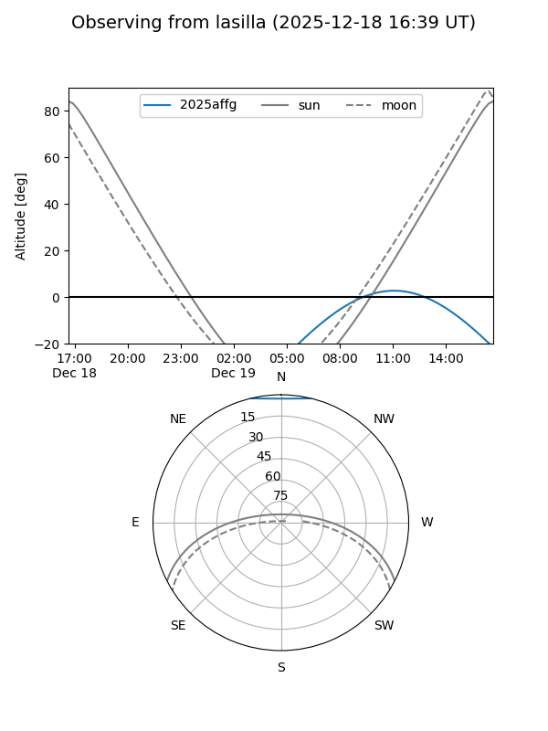
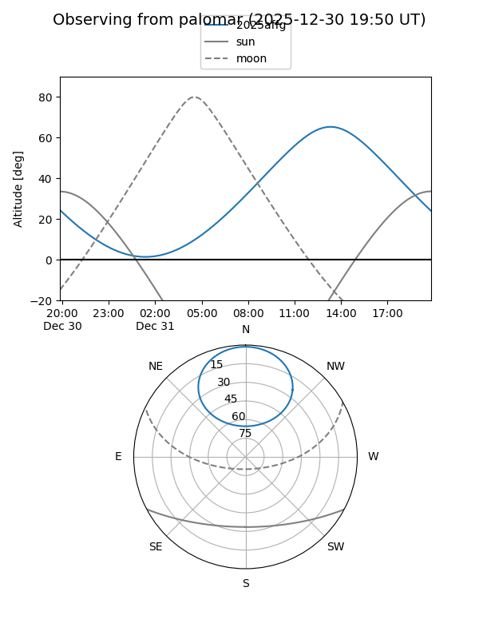

2025affg
Target 2025affg at 2025-12-31 18:00
Aliases and brokers:
FINK: link
Lasair: link
ALeRCE: link
TNS: link
YSE: link
alt names
ZTF25aceglkv (ztf,fink_ztf)
2025affg (tns,yse)
ATLAS25pdc (atlas)
Coordinates:
equatorial (ra, dec) = 183.0346,+58.16412
equatorial (HMS+DMS) = 12:12:08.30,+58:09:50.83
galactic (l, b) = (132.7689,+58.20727)
Flags:
Photometry:
last ztfg=18.98
2 ztfg detections
Lightcurve

Visibility


Additional plots